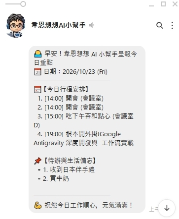
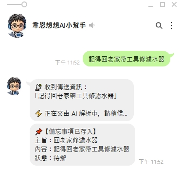
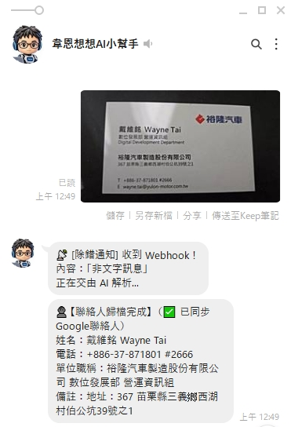
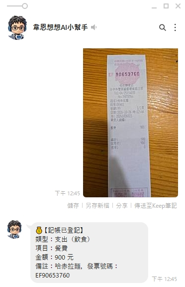
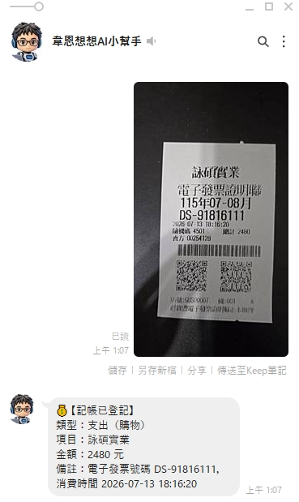
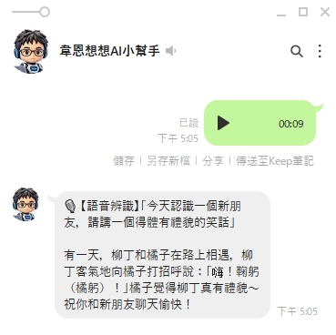
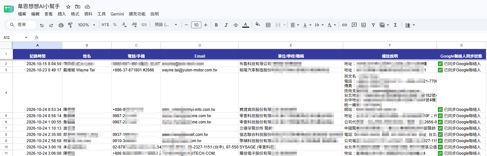
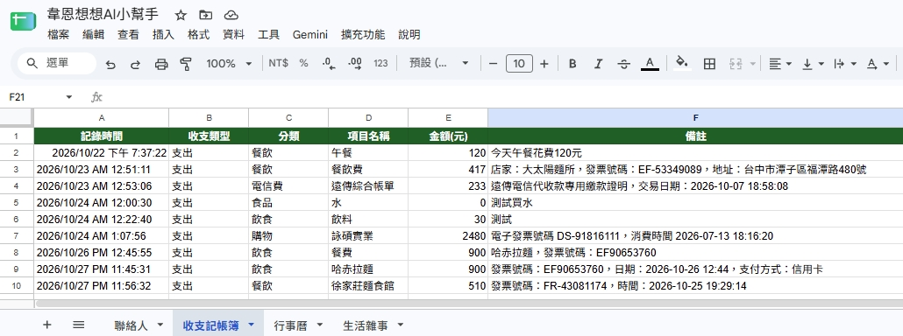
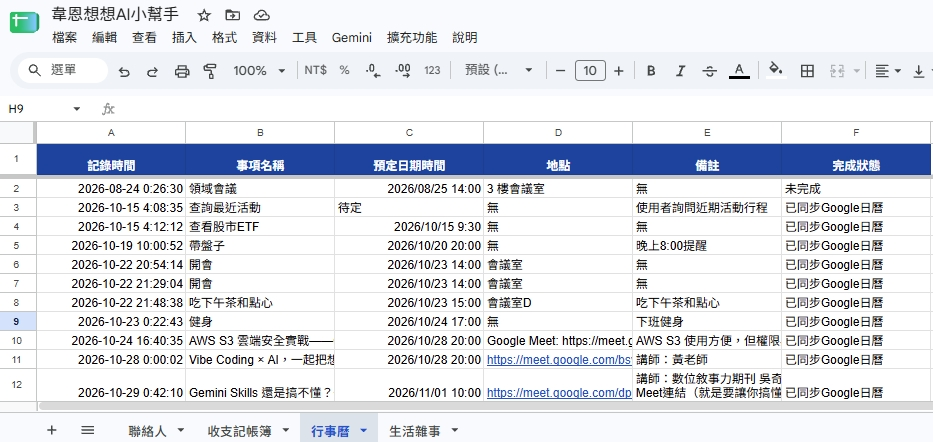
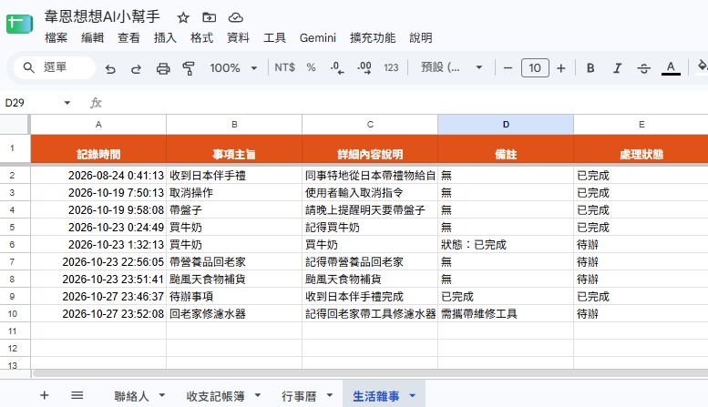

STEP 01ENTRY
LINE Messaging API
透過 Webhook 接收文字、照片與錄音。第一時間以 Reply API 秒回接收提示並啟動官方「輸入中…」小圓點動畫，消除等待焦慮；並以 HMAC-SHA256 驗證數位簽章防止偽造請求。
「Line個人智慧AI小幫手」是一套個人免伺服器（Serverless）雲端智慧管家系統。不需租用主機、零月租維運負擔，直接以最熟悉的 LINE 聊天室為入口，透過 Gemini Flash 多模態模型自動理解文字、名片發票影像與隨手語音，即時歸檔至 Google Sheets 並雙向連動行事曆與通訊錄。

從手機發出 LINE 訊息的那一刻起，系統在毫秒間完成簽章驗證、即時接收回饋、多模態語意結構化解析，並安全寫入個人 Google Workspace 生態系。
透過 Webhook 接收文字、照片與錄音。第一時間以 Reply API 秒回接收提示並啟動官方「輸入中…」小圓點動畫，消除等待焦慮；並以 HMAC-SHA256 驗證數位簽章防止偽造請求。
扮演免伺服器核心調度中樞。機敏 Token 與金鑰全數存放於 PropertiesService 杜絕硬編碼；結合 CacheService 實現 5 分鐘分類鎖定與上一筆紀錄撤回／改存記憶。
採用高配額 Flash 家族（gemini-3.5-flash / gemini-3.8-flash）建立容錯備援梯隊，遇尖峰 429/503 自動延遲切換；圖片超過 1MB 自動 JPEG 輕量化，強制輸出純 JSON 結構。
依 AI 判定結果自動寫入 Google Sheets 四大專屬分頁，並同步呼叫 CalendarApp 建立日曆行程、People API 新增手機聯絡人，最後透過 Push API 回報歸檔結果。
高解析照片或語音轉錄偶爾耗時較長，系統先用免費 Reply Token 秒回「解析中」狀態，待後台完成歸檔後自動改由 Push API 推播最終結果，確保訊息 100% 不漏接。
名片常見 +886 開頭電話，直接寫入試算表易被誤判為數學公式而產生 #ERROR!。系統自動前綴單引號安全轉義，同時保留原生格式同步至 Google 聯絡人。
若 AI 自動分類與預期不同，無須打開試算表修改，直接在聊天室輸入「改存 行事曆」或「/undo」，即可一鍵撤銷重分類並維持資料表整潔。
無須學習複雜介面，不論是清晨的自動行程推播、隨手輸入的待辦備忘、紙本名片與各式發票拍照，甚至是隨口錄製的一段語音，皆能在聊天室中優雅完成。（點擊任一圖片可放大檢視細節）
透過時間觸發器每日早晨自動執行 sendDailyMorningBriefing()，自動讀取當日 Google 行事曆既定會議行程，並撈取試算表「生活雜事」中狀態仍為「待辦」的事項，彙整成清爽易讀的早安重點主動推播至 LINE。

02_備忘記事.jpg
傳送「記得回老家帶工具修濾水器」，系統第一時間秒回「收到傳送資訊，正在交由 AI 解析中…」消除等待感，後台自動提煉主旨「回老家修濾水器」存入生活雜事待辦；事後只需輸入 已完成 修濾水器 即可核銷。

03_AI圖像辨識-名片掃描.jpg
隨手拍攝商務名片傳入聊天室，Gemini 視覺模型自動辨識中英文姓名、分機電話（+886-37-871801 #2666）、Email、公司部門職稱與地址備註，寫入試算表的同時透過 People API 直接同步至 Google 聯絡人。

04_AI圖像辨識-發票記帳_長條式.jpg
面對餐飲店常見的細長型傳統收據（如哈赤拉麵），即使版面狹長、印章重疊，AI 依然能精準辨識消費類型為「支出（飲食）」、項目「餐費」、總計金額 900 元，並將店家名稱與發票號碼 EF90653760 完整寫入備註。

05_AI圖像辨識-發票記帳_感熱式.jpg
針對台灣日常最普及的感熱紙電子發票證明聯（含雙 QR Code 規格），拍下即可自動擷取賣方名稱（詠碩實業）、消費金額 2,480 元、自動歸入「購物」支出，並連同字軌號碼 DS-91816111 與精確交易時間一併建檔。

06_AI語音辨識-講個笑話.jpg
不便打字時只需按住 LINE 麥克風錄音（audio/mp4），系統自動下載音訊交由 Gemini 聆聽轉錄，先附上「語音辨識逐字摘要」方便核對，再依語意自動歸檔行程記帳，或如圖所示化身機智顧問提供得體幽默的破冰笑話。
所有經過 AI 萃取的資訊，最終皆以乾淨嚴謹的欄位結構落盤於您個人的 Google 試算表中。不綁定封閉第三方資料庫，隨時可檢視、篩選、匯出報表，並與 Google 日曆及聯絡人無縫同步。

對應圖 03 名片掃描與文字輸入的人脈紀錄。系統自動將單位與職稱整合，並針對 +886 等國際電話格式自動執行單引號防呆轉義，避免試算表出現公式解析錯誤；右側清楚標記 ✅ 已同步Google聯絡人 狀態。

完整對應圖 04（哈赤拉麵 900 元）與圖 05（詠碩實業 2,480 元）的發票辨識成果，同時支援日常文字如「今天午餐花費 120 元」快速入帳。自動區分餐飲、購物、電信費等類別，保留發票號碼與交易時間以利後續對帳統計。

以系統當前時區（GMT+8）為基準，將口語時間如「明天下午 3 點在會議室 D 吃下午茶」或活動海報自動推算為精確日期時間，透過 CalendarApp 建立日曆事件（標記 已同步Google日曆），並作為圖 01 每日早安晨報的行程來源。

對應圖 02 的日常隨手備忘（可見第 10 列「回老家修濾水器」）。每筆新備忘預設為「待辦」並納入每日晨報提醒；當在 LINE 輸入 已完成 買牛奶 或 /done 指令時，系統即自動將第 E 欄更新為「已完成」，達成閉環管理。